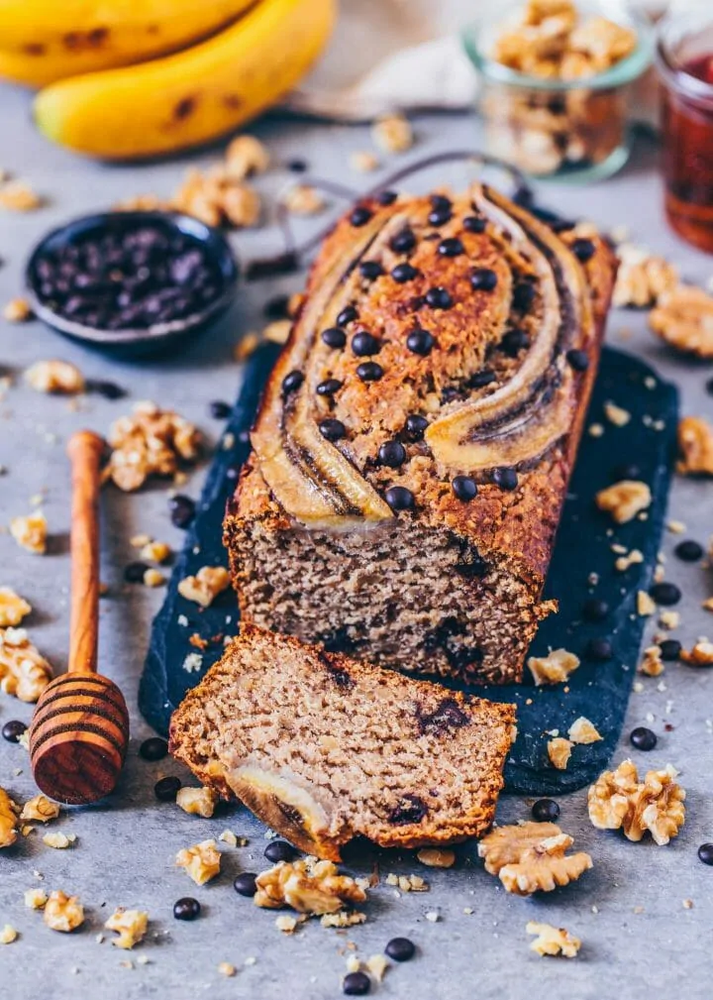

Banana Bread

The classic vegan banana bread!
Are there actually people out there who don´t like it?
Ingredients
- 2 ripe bananas
- 120 ml maple syrup
- 4 tbsp of coconut oil
- 1 tsp oil
- 4 tbsp of plant-based milk
- 1 tbsp of apple cider vinegar
- 70 g rolled oats
- 170 g whole-grain flour
- 2 tbsp walnuts crushed
- 2 tbsp cashew nuts crushed
- 1.5 tsp baking powder
- 0.5 tsp cinnamon
- 1 pinch of salt
- 25 g chocolate chips optional
Toppings:
- 1 banana
- maple syrup to drizzle
- chocolate chips optional
Steps
- Preheat the oven to 180°C. Grease an 8-inch (20 cm) loaf pan with a bit of coconut oil,
then line with parchment paper and set aside.
- Mash the bananas in a large bowl until smooth and mix with all other wet ingredients
(plant-based milk, melted coconut oil, maple syrup, apple cider vinegar).
- Crush the walnuts and cashew nuts. Then add them along with the other dry ingredients
(oats, whole-grain flour, baking powder, cinnamon, salt) to the wet mixture and
stir until just combined. Lastly, fold in the chocolate chips.
- Add the batter into the loaf pan and spread out evenly.
- Halve the banana, place it on top of the batter, and drizzle with some maple syrup.
Sprinkle with more chocolate chips as desired.
- Bake the bread uncovered for 30 minutes. Then reduce the heat to 302°F (150°C)
and bake for another 20 minutes. (If it gets too dark, you can cover it with parchment paper).
- Allow to cool for approx. 30 minutes, then carefully remove from the loaf pan.
- Keep the bread covered in the fridge for about 3-4 days, or freeze for 4-6 weeks.